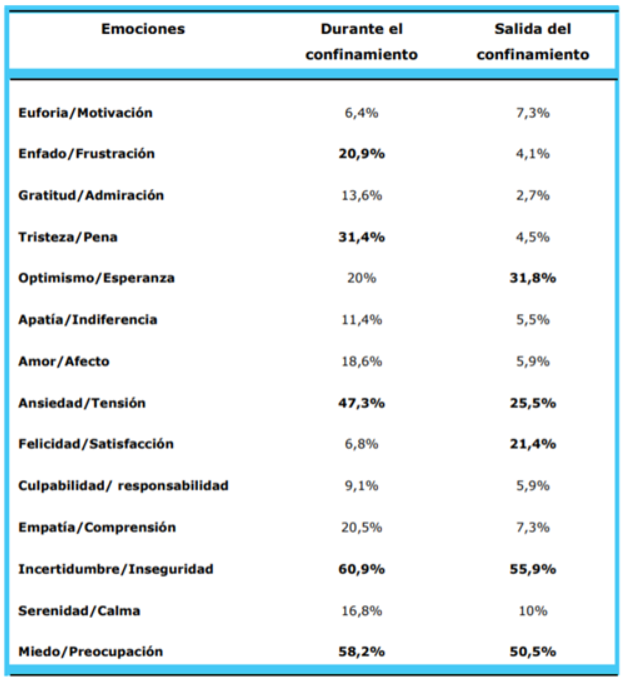

https://www.youtube.com/watch?v=XAvmUEguAFU&t=2s
Información
El tratamiento de esta enfermedad requiere de un tratamiento complejo y mucho tiempo.
El objetivo es destacar la investigación actual que examina la carga psicológica de la fibrosis quística, centrándose en la angustia psicológica, los desafíos sociales, la carga y la adherencia a los tratamientos diarios. [1]
La FQ influye en el comportamiento de los pacientes que padecen y a indirectamente incluye a sus familiares. Por ello, la intervención psicológica en los momentos de transición ayuda a prever dificultades y a fortalecer los recursos personales y familiares. [2][3]
Contexto psicólogo de la FQ con el COVID 19Un estudio realizado en Bélgica con el objetivo de estudiar el impacto temprano de la COVID-19 en pacientes con FQ mostró más tristeza, desánimo, sentimientos de impotencia, críticas hacia los demás, percepción de deterioro de la situación, dificultad para mantener su rutina, así como mayor estrés, pensamientos negativos y dificultades para dormir.[4]

Referencias
[1] Quittner, A., Saez Flores, E. y Barton, J., 2021. La carga psicológica de la fibrosis quística. En: Pulmonary Medicine , 22ª ed. Florida, EE. UU. https://journals.lww.com/co-pulmonarymedicine/Abstract/2016/03000/The_psychological_burden_of_cystic_fibrosis.17.aspx?fbclid=IwAR14Patmc67rrz4uUniJicMgzCN4paiXtooDHlG8nGyXKZ-Q1skRJTLAte8 [2] Castellani, C., JA Duff, A. y C Bell, S., 2018. Directrices de mejores prácticas de ECFS: la revisión de 2018. En: Biblioteca Nacional de Medicina . PubMed, p. Https://pubmed.ncbi.nlm.nih.gov/29506920/. [3] fibrosis quística, F., 2021. Aspectos psicosociales - FEFQ . [en línea] FEFQ. Disponible en: https://fibrosisquistica.org/aspectos-psicosociales/ [Consultado el 12 de septiembre de 2021]. [4] Bobo Ruiz, C., 2020. IMPACTO PSICOLÓGICO DE LA COVID-19 EN PERSONAS CON FQ Y SUS FAMILIARES EN ESPAÑA . [ebook] España. Disponible en: https://fibrosisquistica.org/wp-content/uploads/2020/11/Artculo-Impacto-Psicolgico-Covid-19-en-FQ.pdf [5] García, A., Moreno, S., Trejo, L. y Martín, M., 2021. ¿Cuáles son los factores de riesgo y protección para el bienestar de adolescentes con FQ ?. Revista de Psicología Clínica con Niños y Adolescentes , [en línea] Disponible en: https://www.revistapcna.com/sites/default/files/4.pdf [6] Castellani, C., JA Duff, A. y C. Bell, S., 2018. Directrices de mejores prácticas de ECFS: la revisión de 2018. En: 17a ed. Journal of Cistyc Fibrosis, págs. https://www.cysticfibrosisjournal.com/article/S1569-1993(18)30029-8/fulltext [7] Cystic Fribrosis Foundation, disponible en: https://www.cff.org/